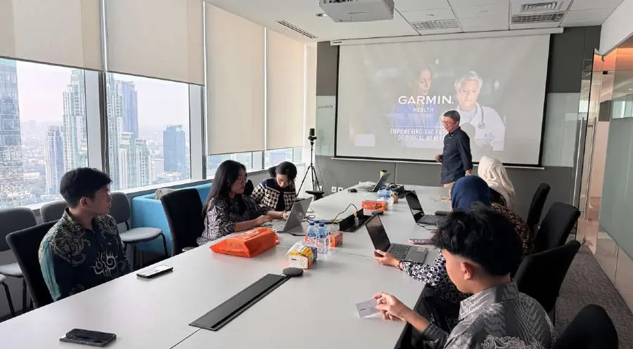
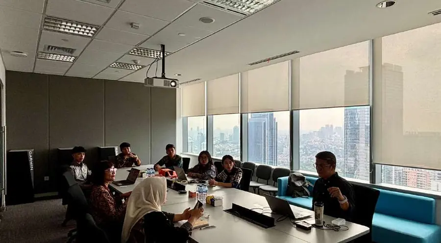
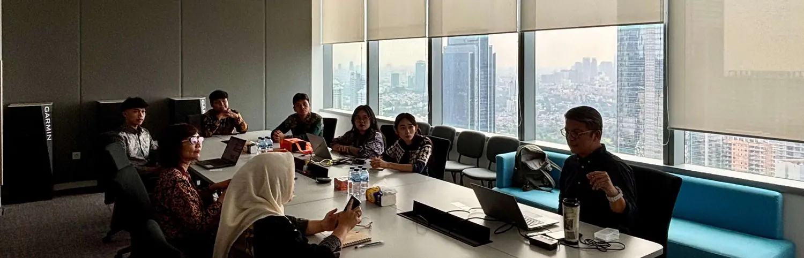

Jul 2025 – Agt 2026
Universitas Esa Unggul, Biro Kerja Sama
Intern
- Mendukung administrasi dan pengelolaan dokumen yang berkaitan dengan kegiatan kerja sama.
- Membantu koordinasi komunikasi antara pihak internal universitas dan mitra eksternal.
- Membantu penyiapan dokumentasi, data, serta kebutuhan administrasi kegiatan kerja sama.
- Mendukung pelaksanaan kegiatan dan agenda yang melibatkan berbagai pihak.
- Menjalankan tugas dengan teliti, terstruktur, dan sesuai arahan kerja.


